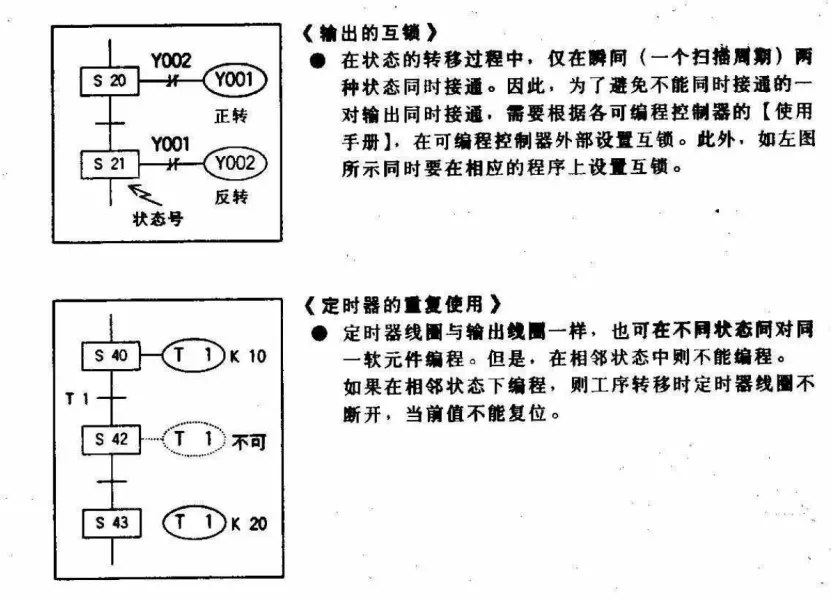
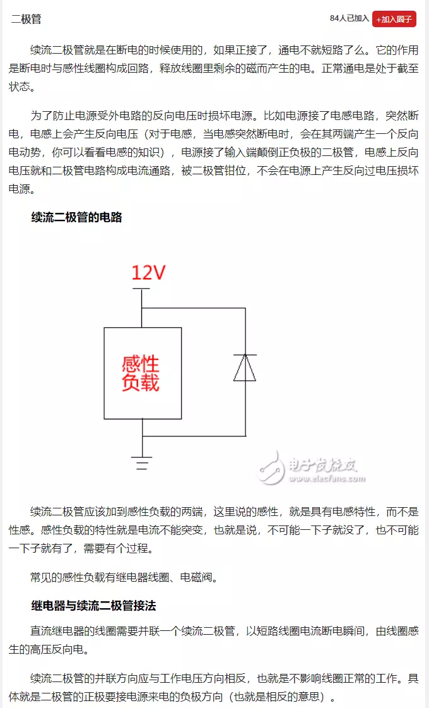

接触器的自感电动势，指示灯是不可以与线圈并联的，只能利用接触器的辅助触点对指示灯进行控制，否则只是灯寿命不长，且虚亮，线圈与指示灯并联是严重违规的设计  m8034，禁止所有输出 在直流电源（Vcc）和地之间并接电容的作用 1，在直流电源（Vcc）和地之间并接电容的电容可称为滤波电容．滤波电容滤除电源的杂波和交流成分，平滑脉动直流电压，储存电能．取值一般100－4700uF．取值与负载电流和对电源的纯净度有关，容量越大越好．有时在大电容傍边会并有一个容量较小的电容，叫高频去耦电容．也是滤波的一种型式用来滤除电源中的高频杂波以免电路产生自激，稳定电路工作状态．取值一般0．1－10uF．取值与滤除杂波的频率有关． 这样接的作用一般叫“退耦”，也叫“退交连”、“旁路”电容，常按排在电源供给、IC和功能模块电路附近。以无感的瓷片、独石电容为佳。 作用是为高频信号提供通路，减小电源内阻，去除电源和地线在敷铜板上“走长线”的影响，防止公用电源的各部分电路之间的“有害交连”等等。常用10nF。 2，在开发板上，通常直流电源和地之间有很多0.1uF非电解电容和10uF的电解电容。 这些电容，目的是使电源线和地线之间为低阻抗，电源接近理想电压源。你要说是滤波作用也可以，但需要弄清楚是滤什么波。不是滤电源的纹波，而是某芯片电流发生变化在电源线上造成的纹波，使其不影响其它芯片。 使用0.1uF无极性电容和10uF电解电容并联，是因为电解电容的寄生电感比较大，消除高频纹波能力较差。而无极性电容寄生电感小，滤除高频纹波能力较好。。但若根据低频的要求选择容量，则无极性电容体积太大，成本也高，电解电容体积小，同样容量价格较便宜。故采用两种电容并联。 你自己设计电路，也应该这样使用，而且各电容位置和走线很有讲究。 只能说两句原则： 1）、各小容量的无极性电容两端到芯片的电源引脚和地引脚联接线尽可能短，越短越好。 2）、电源通常由其它电路板引入，电解电容通常每块电路板上只有一个两个。一个电解电容的话，放到电源进入该电路板之处。此时电解电容当然离各芯片较远，但因电解电容主要在较低频率起作用，所以稍远一点没有关系。如果该电路板上用两支电解电容，另一支放到耗电最多的芯片附近。 这些和电路板元件布局、地线的走线安排(多层板通常有地层)都有关系 10MHz以下的噪声0.1μF电容效果好 按C=1/F，即10MHz取0.1μF 简单的说是，将干扰通过电容接地 ———————————————— 版权声明：本文为CSDN博主「ambizxzh」的原创文章，遵循CC 4.0 BY-SA版权协议，转载请附上原文出处链接及本声明。 原文链接：https://blog.csdn.net/ambizxzh/article/details/76033200 阻容吸收回路，阻容取值 电磁兼容性EMC 为了防止 一些电子产品产生的电磁干扰影响或破坏 其它电子设备的正常工作，各国政府或一 些国际组织都相继提出或制定了一些对电 子产品产生电磁干扰有关规章或标准，符 合这些规章或标准的产品就可称为具有电 磁兼容性 EMC(Electromagnetic Compatibility)。电磁兼容性EMC标准不 是恒定不变的，而是天天都在改变，这也 是各国政府或经济组织，保护自己利益经 常采取的手段 信号线方面 信号输入线与输出线应避免排在一起造成 干扰。 应将CABLE剩余不用之线单端接地，以避 免形成感应回路。 接近电源线附近的信号线考虑采用捻合 (Twist) o 不同类别的信号线避免混杂接在一个连接 头上，宜按类别分类并加地线隔离。 敏感性较高之低准位信号线，除采用绞线 外可加隔离遮蔽。 模拟信号方面 高频的类比信号及脉波信号线建议采用隔 离线。 高频类比信号线采用同轴式隔离线，低频 之类比信号线采用绞线，必要时可外加隔 离遮蔽，绝不可使用同轴隔离线。 连接头安装位置须清洁处理，接头及金属 面的接触电阻须小于2.5m欧姆。 避免将电源与信号线接至同一接头。 电源方面 三相入力电源在NFB (无熔丝断路器)与 变压器间装噪声滤波器(Noise Filter), 此滤波器的输入线愈短愈好。 电源及大电流导线紧贴电气箱之底部，并 沿着边角布线。 开关式电源供应器加装隔离罩以防辐射性 发射干扰，滤波器选用器选用n型或T型 可抑制宽波段噪声，陶铁磁体(Ferrite) 材质可抑制射频噪声。 电源线两端考虑采隔离接地，以免接地回 路(Ground Loop)形成共同阻抗耦合 (Common Impedance Coupling) 将噪 声耦合至信号线。 电源线与信号线尽量采用隔离或分开配 线。 电源变压器应加隔离(Shielding),外 壳须接地良好。 单相AC控制线建议采用绞线。 直流导线建议使用绞线来配线。 使用隔离变压器。 装置压敏电阻。 交流电磁接触器线圈、电磁阀，皆须联结 火花消除器。 电磁开关之热电驿输出侧须联结三相火花 消除器。 直流继电器线圈联结二极管，以供反相电 压保护。 火花消除器距离负载侧愈近愈好。 6.发展容错技术 采用热备用或并行工作、多数表决 为什么弱电要用镀锌钢管做预埋？ 用锌钢管主要是因为抗干扰性和电气连接性，防止其他强磁强电信号干扰弱电信号，同时在做电气连接时镀锌钢管可直接连接桥架。 为什么说现在的锡纸包裹大部分没起到应有的作用？ 可以这么说，没有进行有效接地的锡纸包裹法，那就是耍流氓。当屏蔽材料吸收电磁后，就会产生电子，如果这些电子没有有效的导出，那么就是去了屏蔽作用。这个道理和电子元器件屏蔽罩接地的道理一样。 如果用锡纸包裹了线管，那么最好用铁管卡进行固定，这时吸收电磁后的锡纸就会将电流导出，起到真正的电磁屏蔽作用。所以对于那些架空管的锡纸包裹，没有起到任何作用。 其实锡纸的作用，还是有限的，当电流越大，电磁场越强，干扰也就越强，所以我们可以看到，手机、对讲机等屏蔽罩都是用薄金属片进行覆盖，达到屏蔽作用。 在我们家庭装修中，对于强弱电交叉处，大功率电器的线路，比如空调、插座、厨卫线路的管线交叉处，需要更加注意加强电磁场屏蔽措施，比如用金属过桥弯，屏蔽抗干扰能力更有效，同时金属管卡将过桥弯固定于地面，起到有效接地，真正有效的屏蔽抗干扰。消除感应电势
